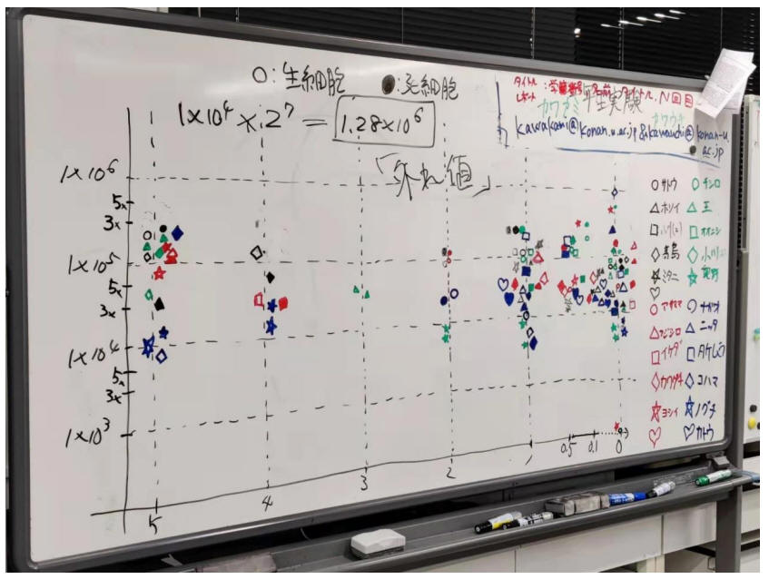

Cell culture experiments
The
original language of this article is Chinese and parts of it have been
translated using DeepL
Sharing a recent experiment I did - culturing cells. Culturing a cell is a
technique where a cell is taken out of an organism and allowed to grow under
artificial conditions. This will allow me to better study the structure and
function of the cell and its role in the life process. I am interested in this
experiment because I want to understand the effects of different cell types and
culture conditions on cell growth.
My experiment is divided into three parts. The first part is the primary
culture, which means that cervical cancer cells (HeLa cells) taken from the
human body are placed in a culture medium and allowed to attach to the dish and
divide continuously. I used special reagents and tools, such as PBS, trypsin,
culture medium, pipettes, and calculation trays, to manipulate and observe the
cells. I also used a bitemporal contrast microscope, which is a microscope that
allows transparent cells to be seen.

I
have found that HeLa cells are easy to culture and will grow rapidly if given
enough nutrients and temperature.
The second part is the cohort culture, which means that the already
cultured HeLa cells are dispersed into different culture dishes and allowed to
continue growing. I used different serum concentrations (0%, 3% and 5%) to
adjust the composition of the culture medium to see what effect it had on cell
growth. I expected that the higher the serum concentration, the faster the cells
would grow because serum provides some important nutrients and growth factors. I
put the dishes with different serum concentrations in a thermostat and observed
them after a week.

The third part of the experiment is the results and analysis, which means
that the cell numbers and survival rates after one week are counted and
compared. I used methods such as separating the cells from the culture dish with
PBS and trypsin, precipitating the cells with a telecentrator, counting the
number of cells with a calculation disk, and using a formula to work out the
survival rate. I also used Origin Pro software and made graphs of the data for
easy observation and comparison.

I
found some discrepancies between my expectations and the actual results. The
higher the serum concentration, the faster the cell growth. In some dishes with
high serum concentrations, the cell numbers were low and the survival rate was
also low.

After that, I checked the chart I had produced and found that the vertical
axis should have been made in the form of the power of 10 instead, as I show
here through a photo of the whiteboard.

I think this may be because the composition and role of serum is not only
to provide nutrition and growth factors, but also some other influences such as
substances that inhibit or promote apoptosis.
Through this experiment, I learned a lot about culturing cells and skills.
I learnt how different reagents and tools work and how to use them, I mastered
some basic manipulation and observation skills, and I learnt how to collect and
analyse data and how to present the results in graphs. I found the experiment
interesting and challenging. I encountered some difficulties, such as uneven
cell dispersion, unclear calculation plates and errors in the data, but I did my
best to overcome them all. I also discovered some unexpected phenomena, such as
the relationship between serum concentration and cell growth, which was not
simply in positive proportion. This made me more curious about the physiological
mechanism of the cells and more eager to study it in depth. All in all, I gained
a lot from this experiment and made me more interested in the field of culturing
cells.
|